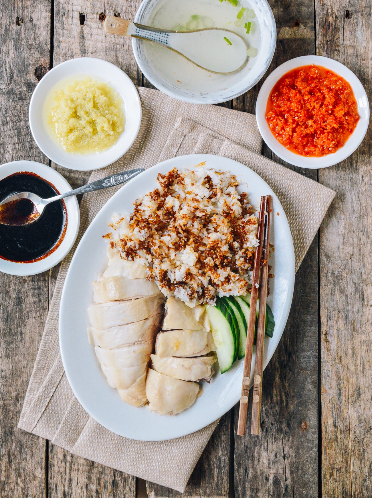

Chicken Rice

Description
Ingredients
For the Chicken:
- 1 whole chicken
- 1 tbsp salt (for rubbing the skin)
- 4 slices ginger
- 4 stalks spring onion
- Water (enough to submerge chicken)
- Optional: 1 pandan leaf, tied in a knot
For the Rice:
- 2 cups jasmine rice (rinsed and drained)
- 2 tbsp chicken fat or vegetable oil
- 3 cloves garlic (minced)
- 2 slices ginger
- 2 cups chicken broth (from poaching chicken)
- 1 pandan leaf (optional)
- Half tsp salt
For the Chili Sauce:
- 5 red chilies (adjust to spice level)
- 3 cloves garlic
- 1-inch ginger
- Half tsp sugar
- 2 tbsp chicken broth
- 1 tbsp lime juice
- Salt to taste
For the Soy Dressing:
- 2 tbsp light soy sauce
- 1 tbsp sesame oil
- 2 tbsp chicken broth
Instructions
- Prepare the chicken
- Rub the chicken all over with salt to exfoliate the skin, then rinse.
- Stuff the cavity with ginger slices and spring onions.
- Bring a pot of water to boil (with extra ginger, spring onion, pandan leaf), then lower to simmer.
- Gently lower in the chicken. Simmer for 35-45 minutes (depending on size).
- Once cooked, transfer the chicken into an ice bath for 5 minutes (for juicy meat and firm skin).
- Pat dry, brush with sesame oil, and set aside.
- Cook the Rice
- In a pan, heat chicken fat or oil. Sauté garlic and ginger until fragrant.
- Add the rinsed rice, stir to coat each grain in the oil.
- Transfer to a rice cooker. Add chicken broth, pandan leaf, and salt.
- Cook as usual.
- Make the Chili Sauce
- Blend all chili sauce ingredients until smooth.
- Adjust seasoning (salt, lime juice, sugar) to taste.
- Make the Soy Dressing
- Combine light soy sauce, sesame oil, and chicken broth in a bowl.
To Serve
- Chop chicken into bite-sized pieces.
- Drizzle with soy dressing.
- Serve with fragrant rice, chili sauce, cucumber slices, and a bowl of hot chicken broth on the side.
Home